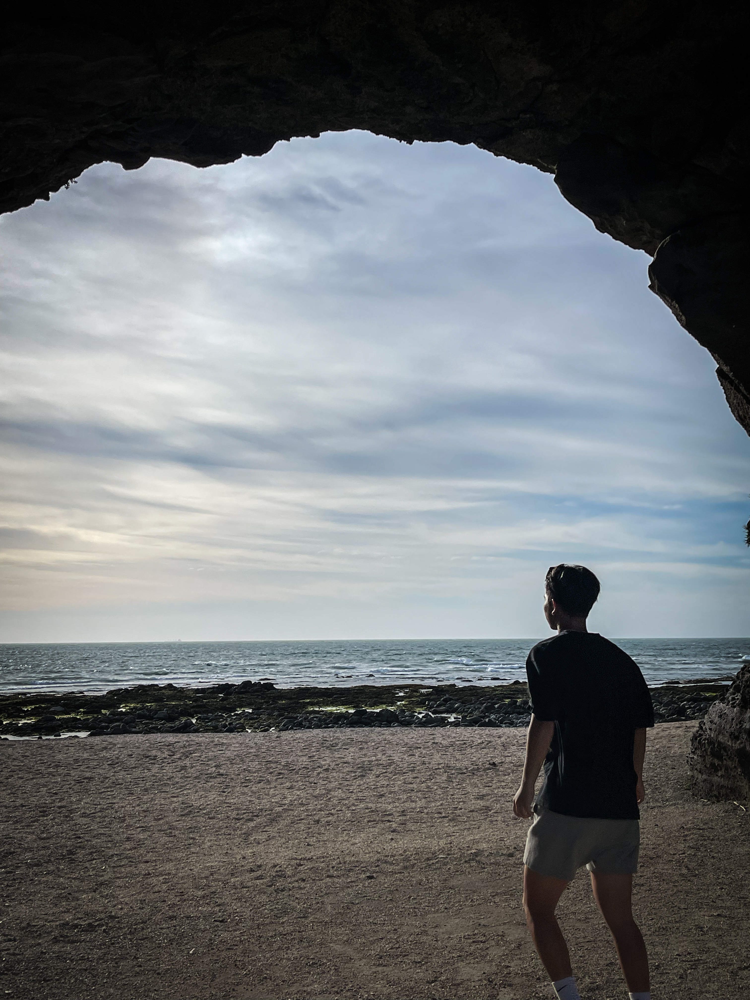
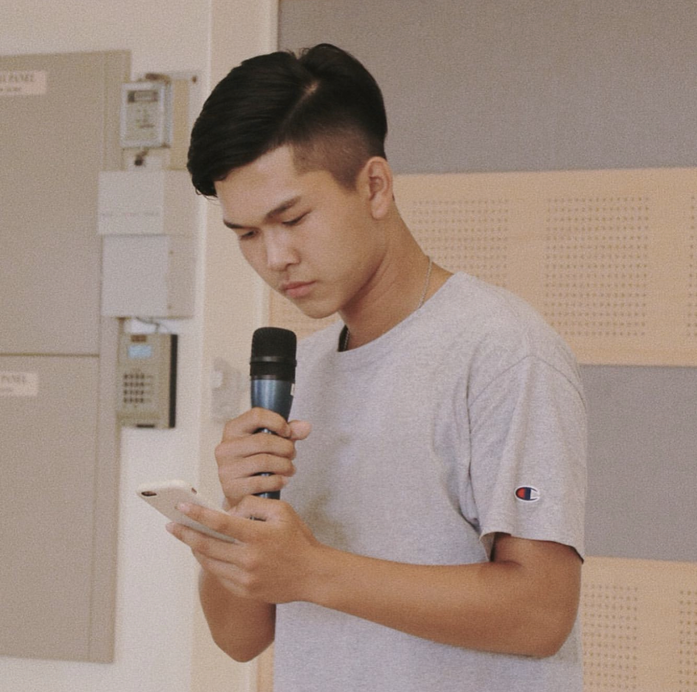
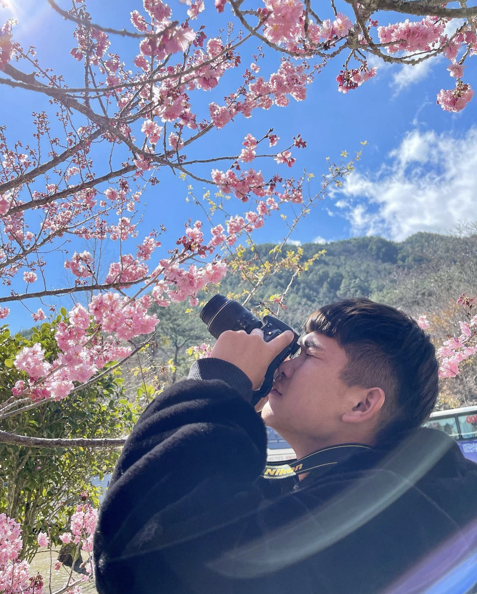

My Hobbies
| Here are my favorite hobbies in order: | |
|---|---|
| 1 | Tennis |
| 2 | Beach |
| 3 | Hiking |
| 4 | Singing |
| 5 | Photography |
Playing tennis tour in Ogden Athletic Club, Fall 2020
Hint: Click the picture above to learn more about us.
My first and foremost favorite hobby is tennis. I love to grab my racket, head to the tennis court, and engage in thrilling matches. The feeling of hitting the ball with precision and agility is incredibly satisfying. It's a sport that challenges both my physical abilities and mental focus. Whether it's a friendly game or a competitive tournament, tennis never fails to bring excitement and joy. The picture above captures a moment of me playing a tennis match at the Ogden Athletic Club, showcasing the passion and dedication I have for this sport.
Shimen beach, Taiwan, Summer 2021
Hint: Click the beach to learn more about Shimen beach, Taiwan.
My second favorite hobby is beach exploration. The coastal areas are a wonderful place to enjoy the beach. The views and sights are just breathtaking. Relaxing under the sun and swimming in the crystal-clear waters are some of the highlights. The picture above is me enjoying a beach day near Shimen Cave in Taiwan.

Taroko national-park, Taiwan, fall 2021
Hint: Click the mountain to learn more about Taroko national-park, Taiwan.
My third favorite hobby is hiking. Taroko National Park in Taiwan offers breathtaking beauty, with the majestic Taroko Gorge as its centerpiece. Exploring its trails reveals soaring cliffs, cascading waterfalls, and diverse wildlife. It's a place of wonder and serenity, where nature's grandeur leaves an indelible mark on the soul.
Singing Performance summer 2022
Hint: Click on the image above, and it will teach you how to sing a very famous Taiwanese song called "Mo Li Hua."
My fourth hobby is singing. I love expressing myself through music and belting out my favorite tunes. Whether it's singing along to the radio or performing on stage, it brings me joy and allows me to connect with others through the power of music. Singing is my passion.
Singing Performance fall 2022
Hint: Click on the camera above for my recommended camera models for beginners.
My fifth hobby is photography. Through photography, I can capture beautiful moments and preserve them forever. I enjoy capturing landscapes, portraits, and special moments, each photo telling its own unique story. Here is a captivating moment I captured during my photography journey.
Back to the Top